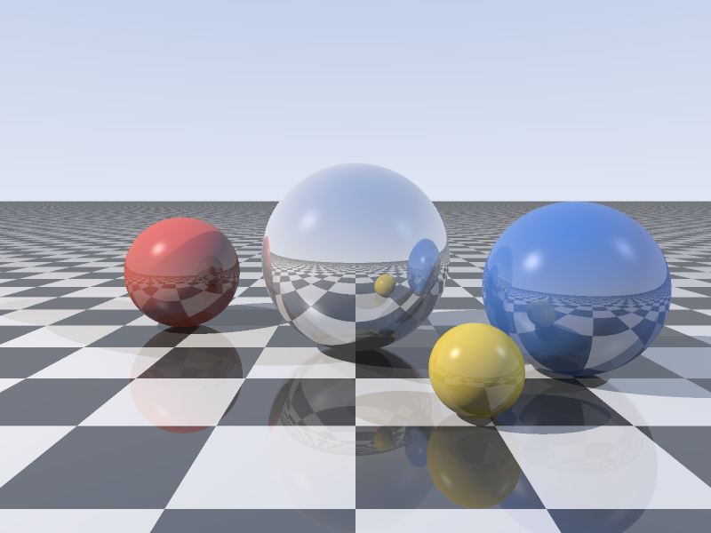
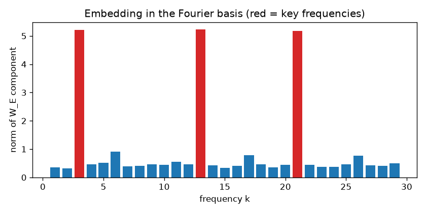
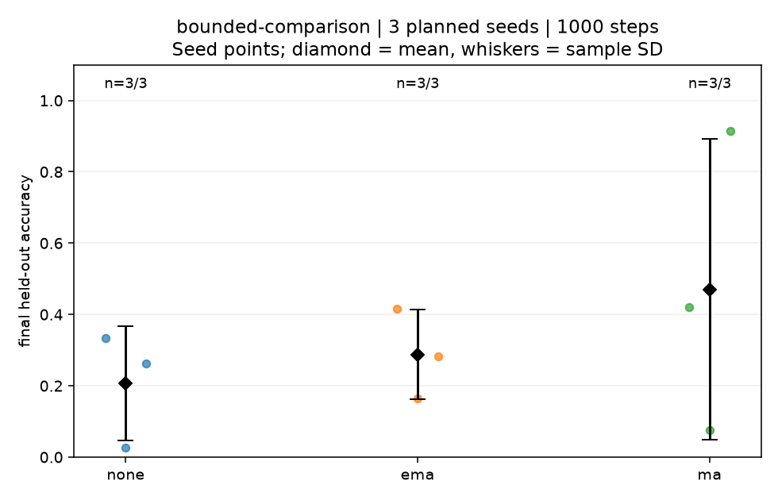

Stable Fluids
A small fluid simulation.
Algorithms, simulations, and machine learning experiments.
A small fluid simulation.


Small changes. Surprising behavior. Explore a maze, steer a flock, or make your next move against an AI.
Open the playgroundThe decisions and details behind the implementations.
One seed never tells the whole story. This Grokfast comparison keeps the data, model, and step budget matched across three seeds and three methods.
The observed results vary widely. The report keeps every run, including unreached thresholds, with raw data and execution records.
Explore the benchmark
Two practical tools, with a clear path from input to result.
Find repeated authentication failures, possible password spraying, and success after a failure burst. Every finding points back to the log evidence.
Explore the source12 authentication events
3 findings
Repeated failures
Possible password spraying
Success after repeated failuresReview a receipt, correct the details, and move it through an approval queue. Try the complete workflow with fictional sample purchases.
Try the receipt demo View sourceOffice supplies · North building
Fictional sample from the working demo
Twenty classic projects. Six paper implementations. Each with its source, setup, and explanation.
Fluid cover illustration created for this gallery. See the numerical simulation preview. Other algorithm previews use project code; the research figure shows measured results.